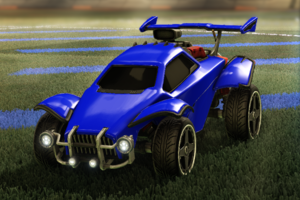
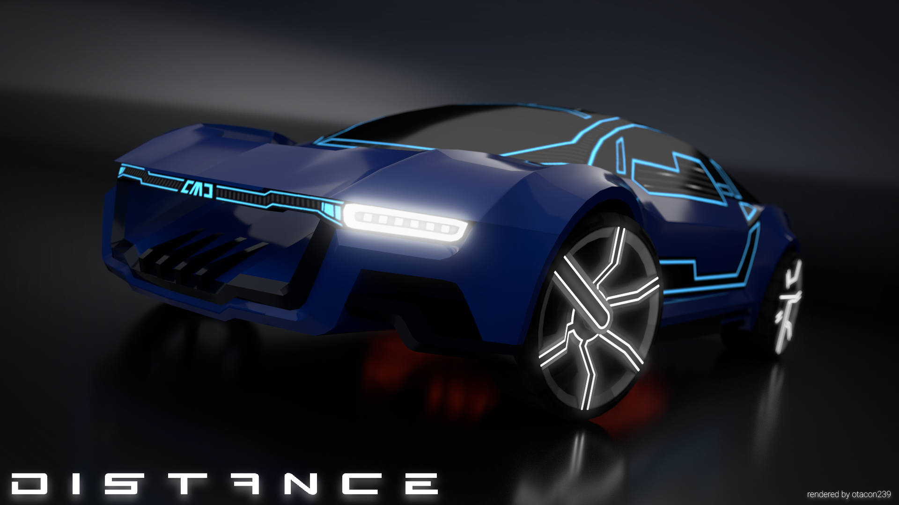
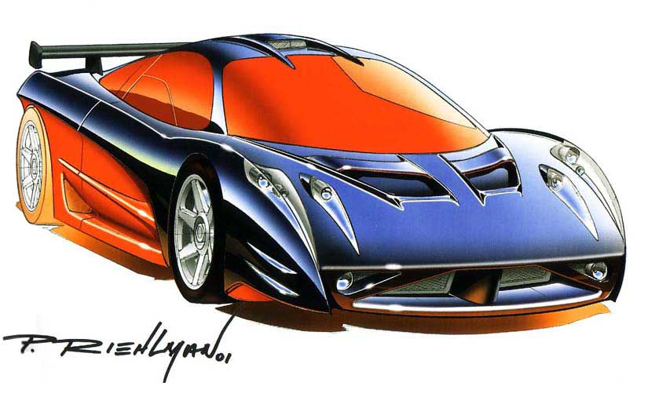
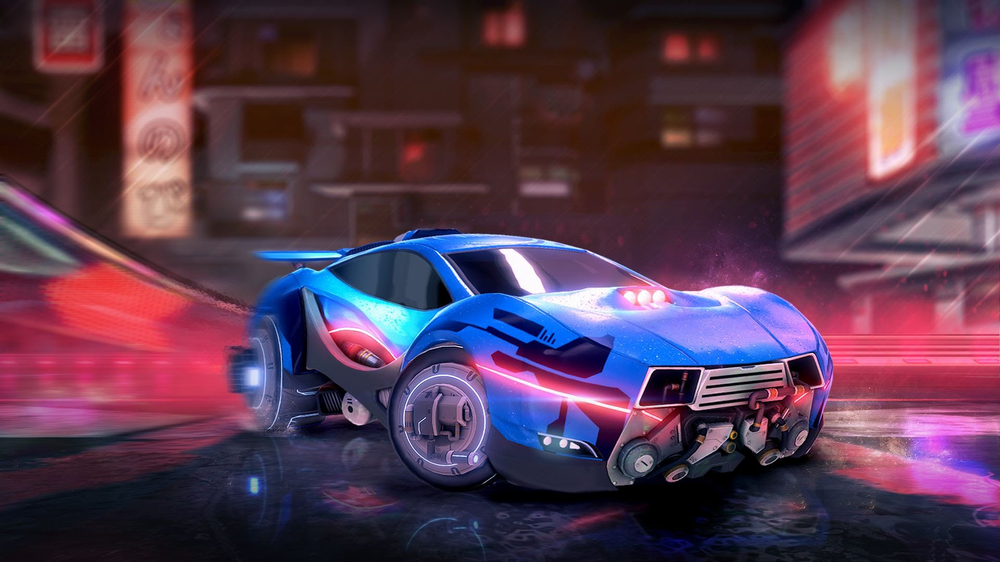
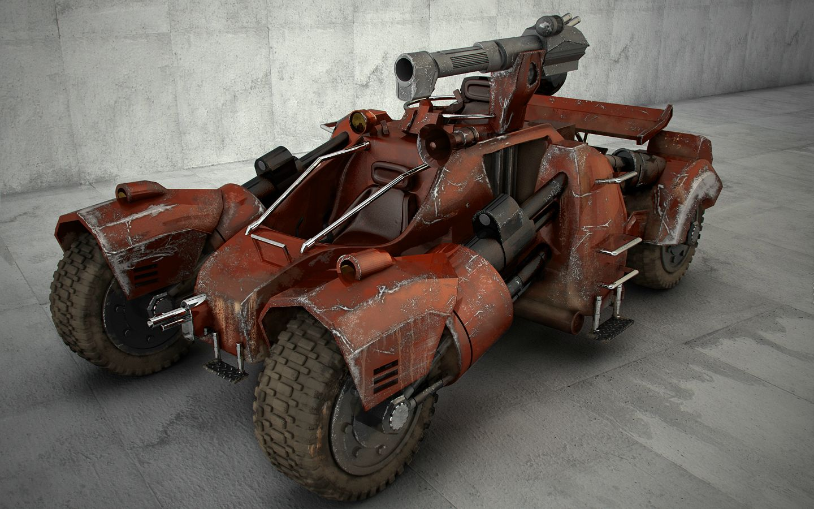

The Octane

The Octane is the base car from Rocket League and is one of the two I like using the most.
It also sits as the most used car in the game. Whether thats due to how it acts or its the default
its one of the coolest looking in my opinion.
The Refractor

The Refractor from Distance is easily one of the coolest cars I've seen in a game.
It has the ability to boost, fly, and adjust its direction in mid-air
while out of it's flight mode. It can even survive with most of the car missing.
The HW Prototype 12

There isn't to much to say about the HW Prototype 12 accept that it has always been one of
my favorite hot wheeles car. thw look of it and the ability to use it in a hot wheeles game
that I played quite a bit as a kid
The Masamune

The Masamune is another car from Rocket League and is my personal favorite. The style of this
car is so good looking to me and I use it more than any other car. The lights that are on the car
and the decals you can use look amazing when you combine it with the different paint types.
The Light Runner

The light runner is the first car drivable in Borderlands 2. Fast and difficult to destroy
this car is very fun to drive. with weapons in the front and a mounted turret on top your
able to get two people in it, making it good for multiplayer.